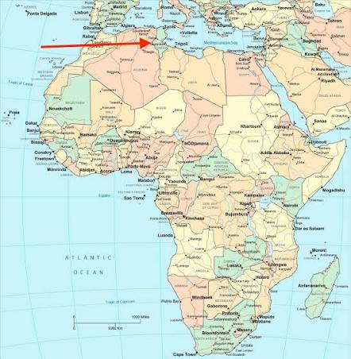
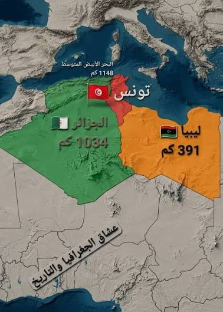
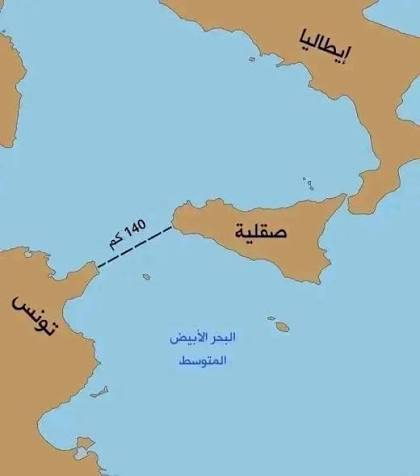
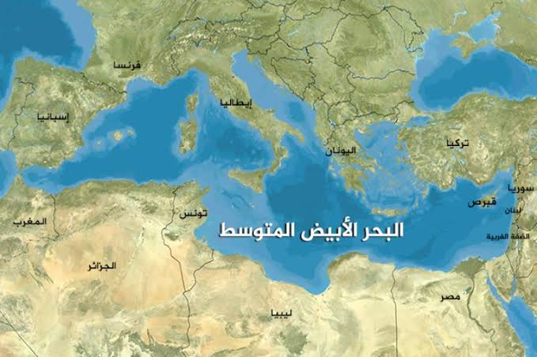

خريطة تونس: موقع البلاد التونسيّة
مقدمة
لكلّ بلد موقع جغرافي يميّزه عن غيره من البلدان. وتتميّز البلاد التونسيّة بموقعها المتميّز في شمال القارة الإفريقيّة، المطلّ على البحر الأبيض المتوسّط، والقريب من القارّة الأوروبيّة. فما هو موقع تونس بالتحديد؟ وما هي حدودها؟ ولماذا يُعتبر موقعها استراتيجيًّا؟
أين تقع البلاد التونسيّة؟ وما هي حدودها البريّة والبحريّة؟ ولماذا يُعدّ موقعها موقعًا استراتيجيًّا مهمًّا؟
I موقع البلاد التونسيّة
تقع البلاد التونسيّة في شمال القارة الإفريقيّة، على الضفّة الجنوبيّة للبحر الأبيض المتوسّط. وهي بذلك تحتلّ موقعًا وسطًا بين المغرب العربي شرقًا وغربًا، وبين القارّة الإفريقيّة والقارّة الأوروبيّة شمالًا وجنوبًا.
ونظرًا لهذا الموقع، فإنّ البلاد التونسيّة تُعرف أيضًا بأنّها «بوّابة إفريقيا» نحو أوروبّا، وهمزة وصل بين ضفّتي المتوسّط الشماليّة والجنوبيّة.
II حدود البلاد التونسيّة
يحدّ البلاد التونسيّة من مختلف الجهات:
1. الحدود البحريّة (شرقًا وشمالًا)
يحدّ البلاد التونسيّة البحر الأبيض المتوسّط من جهة الشرق ومن جهة الشمال، بساحل يمتدّ على حوالي 1300 كلم.
2. الحدود الغربيّة (غربًا)
تحدّ البلاد التونسيّة الجزائر من جهة الغرب، على امتداد حدود بريّة طويلة.
3. الحدود الجنوبيّة (جنوبًا)
تحدّ البلاد التونسيّة من جهة الجنوب كلٌّ من ليبيا والجزائر معًا.
ويمكننا تلخيص حدود البلاد التونسيّة في الجدول التالي:
| الجهة | ما يحدّها |
|---|---|
| جهة الشرق | البحر الأبيض المتوسّط |
| جهة الشمال | البحر الأبيض المتوسّط |
| جهة الغرب | الجزائر |
| جهة الجنوب | ليبيا والجزائر معًا |
III موقع استراتيجي متميّز
يُعتبر موقع البلاد التونسيّة موقعًا استراتيجيًّا، وذلك لعدّة اعتبارات:
1. الإطلالة على البحر الأبيض المتوسّط
فهي تطلّ على البحر الأبيض المتوسّط، وعلى الدول المطلّة عليه، ممّا يجعلها في قلب حركة التبادل التجاري والثقافي بين ضفّتي المتوسّط.
2. القرب من القارّة الأوروبيّة
فالبلاد التونسيّة قريبة جدًّا من القارّة الأوروبيّة، إذ تفصلها 500 كلم فقط عن إيطاليا، وحوالي 1500 كلم عن فرنسا وإسبانيا. وهذا القرب يجعل التواصل مع أوروبّا سهلًا وسريعًا.
3. سهولة التواصل مع العالم الخارجي
بفضل موقعها بين إفريقيا وأوروبّا، وبفضل إطلالتها على المتوسّط، فإنّ التواصل مع العالم الخارجي سهل جدًّا بالنسبة للبلاد التونسيّة، سواء كان ذلك عبر الملاحة البحريّة أو النقل الجوّي أو المبادلات التجاريّة.
ويمكننا تلخيص المسافات بين تونس وبعض البلدان الأوروبيّة في الجدول التالي:
| البلد | المسافة عن تونس |
|---|---|
| إيطاليا | 500 كلم |
| فرنسا | 1500 كلم |
| إسبانيا | 1500 كلم |
IV مثال تطبيقي: كيف أحدّد موقع تونس على الخريطة؟
لنأخذ مثالاً يوضّح لنا كيف نستعمل الاتجاهات لتحديد موقع البلاد التونسيّة على الخريطة. تخيّل أنّ التلميذة سلمى أمام خريطة العالم، وتريد أن تصف لصديقتها موقع تونس.
1. الخطوة الأولى: تحديد القارة
نظرت سلمى إلى الخريطة، فوجدت أنّ البلاد التونسيّة تقع في شمال القارة الإفريقيّة.
2. الخطوة الثانية: تحديد الحدود البحريّة
ثمّ لاحظت أنّ البحر الأبيض المتوسّط يحدّ البلاد التونسيّة من جهتي الشرق والشمال.
3. الخطوة الثالثة: تحديد الحدود البريّة
ثمّ لاحظت أنّ الجزائر تحدّها من الغرب، وأنّ ليبيا والجزائر تحدّانها من الجنوب.
4. الخطوة الرابعة: استنتاج أهمّية الموقع
واستنتجت سلمى أنّ البلاد التونسيّة بموقعها هذا تربط بين إفريقيا وأوروبّا، وأنّها قريبة جدًّا من أوروبّا (500 كلم عن إيطاليا فقط)، وهذا ما يجعل موقعها استراتيجيًّا.
وهكذا تمكّنت سلمى من وصف موقع البلاد التونسيّة بدقّة اعتمادًا على الاتجاهات والحدود.
خاتمة
تقع البلاد التونسيّة في شمال القارة الإفريقيّة، ويحدّها البحر الأبيض المتوسّط شرقًا وشمالًا، والجزائر غربًا، وليبيا والجزائر معًا جنوبًا. ويُعدّ هذا الموقع موقعًا استراتيجيًّا مهمًّا، لأنّه يُطلّ على المتوسّط، ولأنّه قريب جدًّا من أوروبّا، ممّا يُسهّل التواصل مع العالم الخارجي.
📖 تعريفات
🌍 أمكنة ومناطق
- البلاد التونسيّة: بلد يقع في شمال القارة الإفريقيّة، يطلّ على البحر الأبيض المتوسّط من الشرق والشمال، ويحدّه من الغرب الجزائر ومن الجنوب ليبيا والجزائر معًا.
- البحر الأبيض المتوسّط: بحر يفصل بين القارّة الإفريقيّة جنوبًا والقارّة الأوروبيّة شمالًا، ويحدّ البلاد التونسيّة من جهتي الشرق والشمال.
- القارّة الإفريقيّة: إحدى قارّات العالم الكبرى، وتقع البلاد التونسيّة في شمالها الشرقي.
- القارّة الأوروبيّة: القارّة الواقعة شمال البحر الأبيض المتوسّط، وتبعد البلاد التونسيّة عنها 500 كلم عن إيطاليا و1500 كلم عن فرنسا وإسبانيا.
- الجزائر: البلد الذي يحدّ البلاد التونسيّة من جهة الغرب ومن جهة الجنوب.
- ليبيا: البلد الذي يحدّ البلاد التونسيّة من جهة الجنوب مع الجزائر.
📌 أخرى
- الموقع الاستراتيجي: الموقع الجغرافي المتميّز الذي يمنح البلد أهمّية كبيرة في التنقّل والتجارة والتواصل مع غيره من البلدان، مثل موقع البلاد التونسيّة المطلّ على المتوسّط والقريب من أوروبّا.
- الخريطة: تمثيل مصغّر لسطح الأرض أو لجزء منه، تُستعمل لتحديد المواقع والحدود والمسافات بين الأماكن.
🗺️ خرائط وصور توضيحيّة



